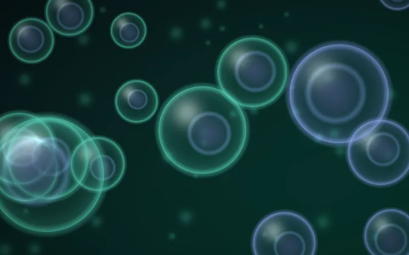
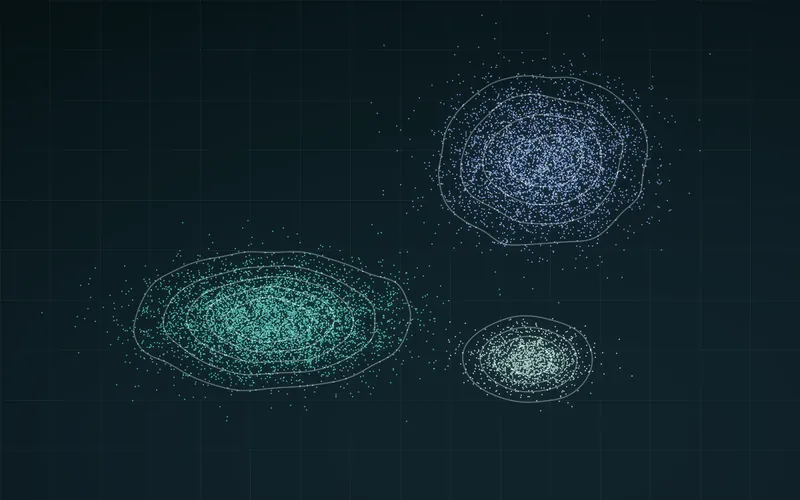
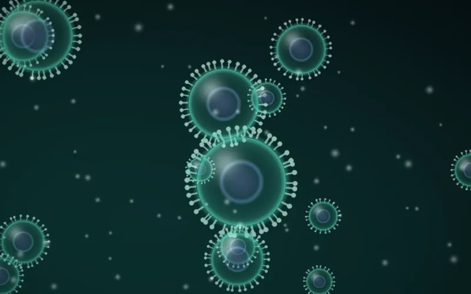
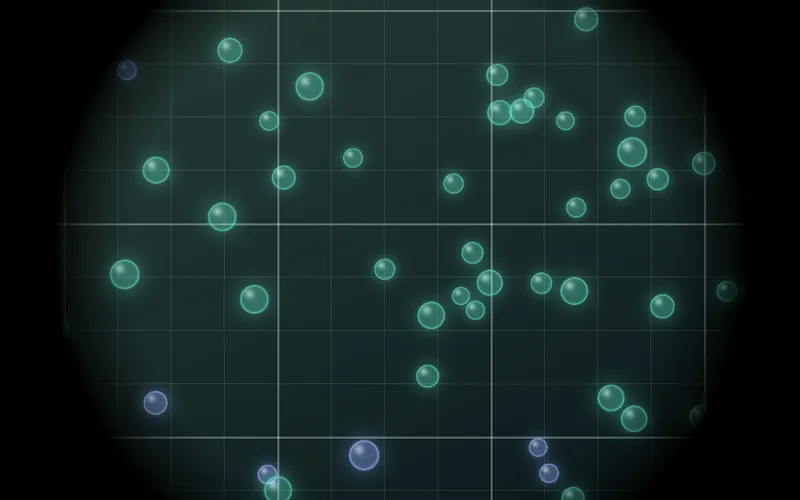
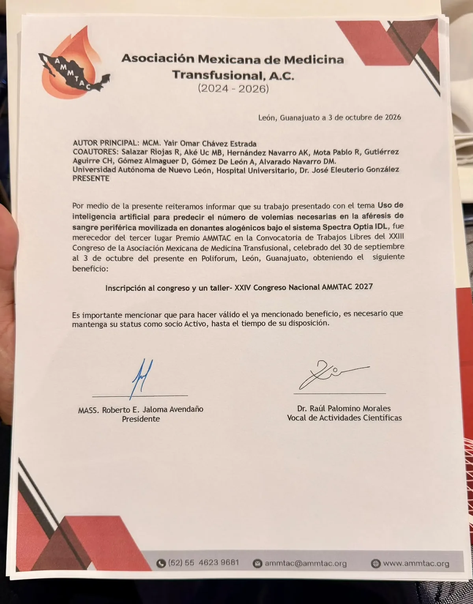
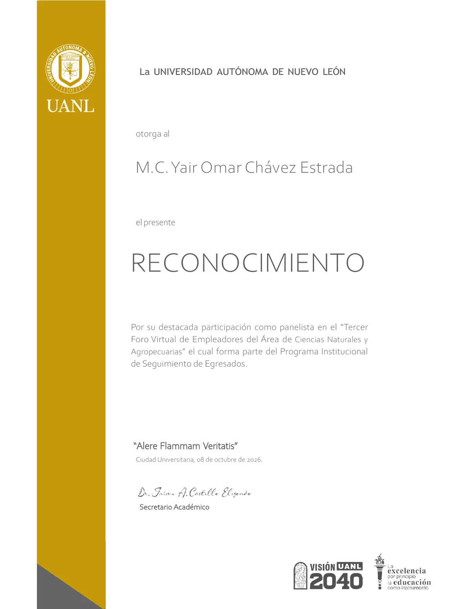
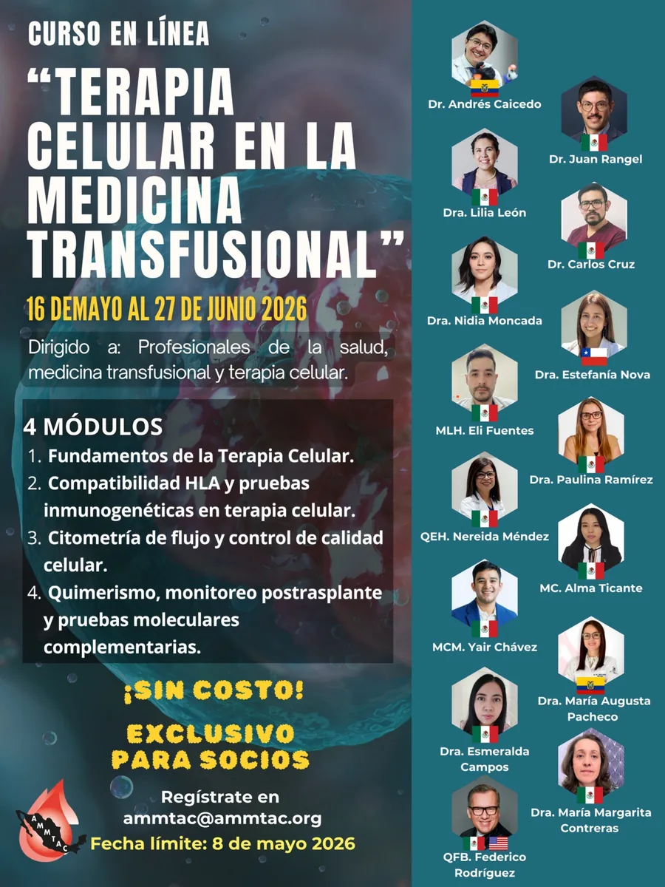
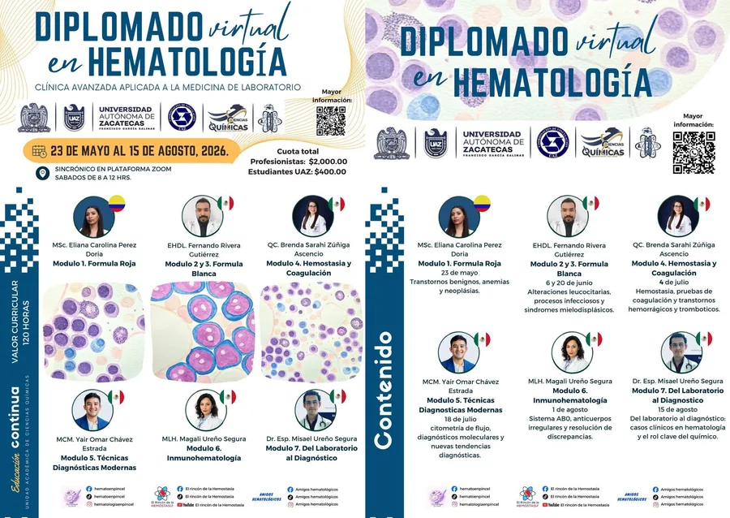
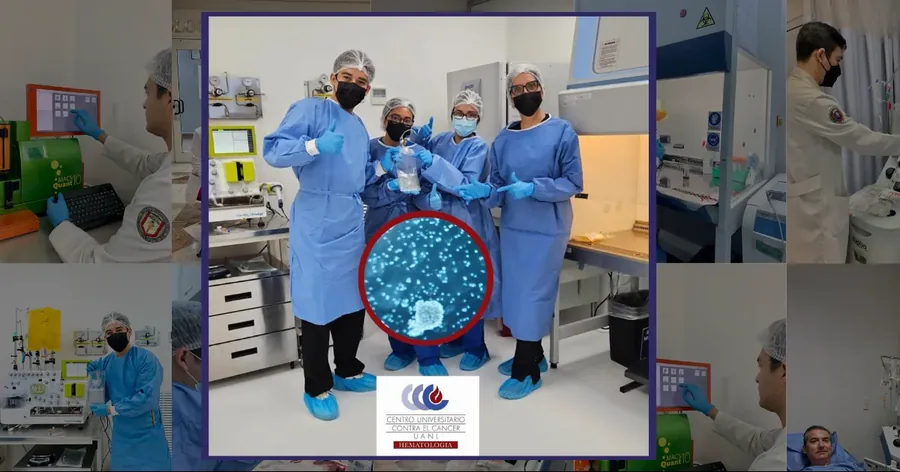

2025
Decentralized point-of-care manufacturing of CD19 chimeric antigen receptor T cells in Mexico
R Salazar-Riojas, DM Alvarado-Navarro, YO Chávez-Estrada et al.
JCO Global Oncology 11, e240058118 citas
¿Qué se necesita para llevar una terapia celular del laboratorio de investigación a una manufactura cGMP?
Ciencia rigurosa, control de calidad y datos. Ahí es donde entramos.
YoCellTherapy aporta experiencia científica y técnica en linfocitos T genéticamente modificados (CAR-T), manufactura cGMP de medicamentos de terapia avanzada (ATMPs) e inteligencia artificial clínica a hospitales, grupos de investigación e inversionistas de la región.
Nuestra misión es impulsar la investigación en terapias celulares avanzadas en Latinoamérica con rigor, calidad y datos, acompañando a los equipos que la desarrollan en la región.
Experiencia directa en aféresis, criopreservación, citometría de flujo y control de calidad dentro de una unidad activa de trasplante hematopoyético y CAR-T.
Bioestadística y modelos de machine learning construidos con datos clínicos reales para anticipar rendimientos, optimizar procesos y sustentar decisiones.
Puentes entre hospitales, academia e industria para construir capacidad en terapia celular en toda LATAM.
Consultoría científica que cubre el ciclo completo de una terapia avanzada, desde el diseño del protocolo hasta la liberación del lote y la evaluación de inversión.

Diseño, manufactura y validación de medicamentos de terapia avanzada (ATMPs). Estrategia cGMP para CAR-T, células madre y productos biológicos avanzados.

Diseño estadístico de estudios clínicos y preclínicos, análisis de datos biomédicos.
Conocer más → MLModelos de ML y predicción clínica aplicados a citometría de flujo, aféresis y manufactura de medicamentos de terapia avanzada (ATMPs).
Conocer más →
Evaluación de propuestas de investigación, asesoría en financiamiento y desarrollo de pipelines.
Conocer más →
Control microbiológico de criopreservados, validación de métodos, medicina transfusional.
Due diligence científico-técnico, evaluación de startups biotech y viabilidad de terapia celular en LATAM.
Proyectos que desarrollamos en México para reducir la dependencia de proveedores externos y fortalecer la calidad de los productos celulares.
| Programa | Área | ConceptoDesarrolloValidaciónUso clínico |
|---|---|---|
| YCT-CD19 Vector lentiviral CD19 in-houseLLA-B refractaria · preclínico · RUO |
Terapia génica · CAR-T | Constructo, producción de vector y optimización de MOI |
| YCT-QC Esterilidad en CAR-T criopreservadosBD BACTEC™ FOS en matrices DMSO/HSA |
Control de calidad | Manuscrito en preparación para Cytotherapy |
| YOCE-ML Modelo predictivo de aféresisGradient Boosting · CD34⁺ |
IA clínica | Validación prospectiva · 3.er lugar Premio AMMTAC 2026 |
Apoya la investigación en MéxicoLas aportaciones cubren instalaciones certificadas, reactivos especializados y estudios como el vector CD19 in-house. Cada aportación incluye factura fiscal y reporte de avances.
Apoyar vía PayPal →Calcula el volumen sanguíneo total, el volumen plasmático y la solución de reemplazo con albúmina humana al 5%, con base en las guías ASFA 2023.
Cálculo de WBC y CD34⁺ con recomendaciones de fraccionamiento para células progenitoras hematopoyéticas.
ProcesamientoFraccionamiento de unidades de CD34⁺ con distribución de albúmina.
AféresisEficiencia de colecta en aféresis de CD34⁺ para trasplante alogénico, a partir de la pre-cuenta y el volumen procesado.
CAR-TLeucoaféresis de linfocitos T CD3⁺ para manufactura CAR-T: eficiencia de colecta y volumen a procesar.
PediatríaVolumen extracorpóreo en aféresis pediátrica y de bajo peso, con riesgo de hipovolemia por fórmula de Nadler.
Machine learning · con códigoModelo predictivo del volumen sanguíneo a procesar en aféresis de CPH.
Cultivo celularDel conteo al banco celular: volumen de siembra, proyección de expansión, medio de cultivo y de congelación para Raji (ATCC CCL-86).

Científico e investigador especializado en terapia celular y génica, manufactura de medicamentos de terapia avanzada (ATMPs) y trasplante de células hematopoyéticas. Participa en el control de calidad del primer programa descentralizado de manufactura CAR-T en México, en la Unidad de Trasplante de Hematología y Terapia Celular del Hospital Universitario UANL.
Miembro del comité ESP de la ISCT para Sudamérica y Centroamérica. Con experiencia en translación ciencia–clínica y en fomentar colaboraciones entre hospitales, academia e industria.

Autor principal del trabajo sobre inteligencia artificial para predecir el número de volemias en la aféresis de sangre periférica movilizada en donantes alogénicos (Spectra Optia IDL). XXIII Congreso AMMTAC, León, Guanajuato.
Ver evidencia →
Reconocimiento de la Universidad Autónoma de Nuevo León por su participación como panelista en el foro del Área de Ciencias Naturales y Agropecuarias, del Programa Institucional de Seguimiento de Egresados.
Ver evidencia →
Módulo III: citometría de flujo y control de calidad en células CAR-T y progenitores hematopoyéticos.
Ver más →
Profesor del Módulo 5: técnicas diagnósticas modernas, citometría de flujo y diagnóstico molecular.
Ver más →
Nota de SuperChannel 12 sobre la investigación en terapia CAR-T desarrollada en México.
Ver más →Laboratorio de análisis clínicos en construcción en San Buenaventura, Coahuila.
Podcast de divulgación científica sobre terapia celular, ADN y las células detrás de la medicina moderna.
Novela · Editorial Musa 2025Drama hospitalario realista sobre el cuidado del enfermo en casa, la fragilidad y la esperanza. En eBook y pasta blanda.
Disponible para consultoría científica, asesoría en I+D e inversión estratégica en LATAM.
yair_chaveze@hotmail.com